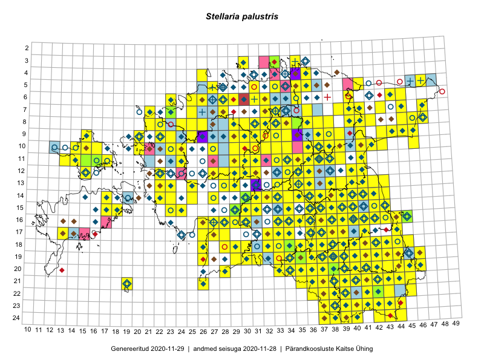

Stellaria palustris
Uuendatud: 2016-12-02
Kaardile koondatud taksonid: Stellaria palustris Ehrh. ex Hoffm.

Kaart põhineb 286 kirjel, neist vaatlusi 284 ja eksemplare 2. Taksonit on leitud 215 ruudust.
Kuvatud viited 20 esimesele andmebaasikirjele, ülejäänud PlutoFis
- Malle Leht: 2015-07-09: : ala
- Ott Luuk, Toivo Sepp: 2015-07-29: 09-31: ala
- Peedu Saar, Ott Luuk: 2015-06-21: 14-41: ala
- Ott Luuk, Peedu Saar: 2015-07-27: 11-35: ala
- Peedu Saar: 2015-07-04: 18-44: ala
- Peedu Saar: 2015-07-14: 15-38: ala
- Peedu Saar: 2015-07-15: 15-39: ala
- Ott Luuk, Peedu Saar: 2015-08-13: 24-44: ala
- Peedu Saar, Eerik Leibak: 2015-07-30: 16-41: ala
- Peedu Saar, Liina Oja: 2015-06-08: 10-33: ala
- Peedu Saar, Liina Oja: 2015-06-09: 17-28: ala
- Peedu Saar, Liina Oja: 2015-06-10: 14-30: ala
- Ott Luuk, Peedu Saar: 2015-08-12: 23-43: ala
- Peedu Saar, Liina Oja: 2015-06-10: 14-31: ala
- Peedu Saar, Liina Oja: 2015-06-11: 15-29: ala
- Peedu Saar, Liina Oja: 2015-07-21: 06-44: ala
- Peedu Saar, Liina Oja: 2015-07-22: 08-45: ala
- Malle Leht: 2015-07-25: 18-40: ala
- Tiit Hallikma, Toomas Kukk: 2015-06-10: 15-30: ala
- Malle Leht: 2015-07-18: 19-40: ala